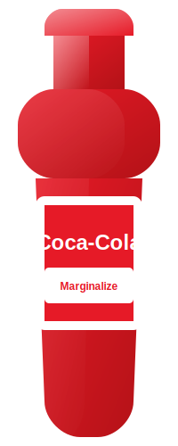

Marginalize's Coca-Cola
Marginalize enjoys Coca-Cola with ice and a slice of lemon. Perfect for hot summer days!
About Marginalize
Marginalize discovered their love for Coca-Cola during a summer road trip across the country. Since then, they've been experimenting with different ways to enjoy this classic beverage.
Favorite Way to Enjoy
Marginalize's signature way to enjoy Coca-Cola is with plenty of ice, a slice of lemon, and occasionally a sprig of fresh mint. They believe this combination enhances the refreshing qualities of the drink, especially during hot summer months.
Fun Fact
Marginalize has a collection of Coca-Cola memorabilia from the 1950s, including vintage advertisements and original glass bottles. Their prized possession is a limited edition bottle from the 1996 Olympics.
Back to All Bottles